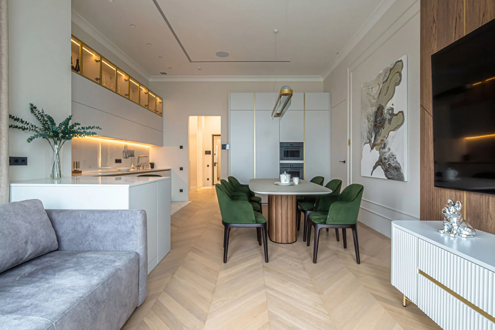
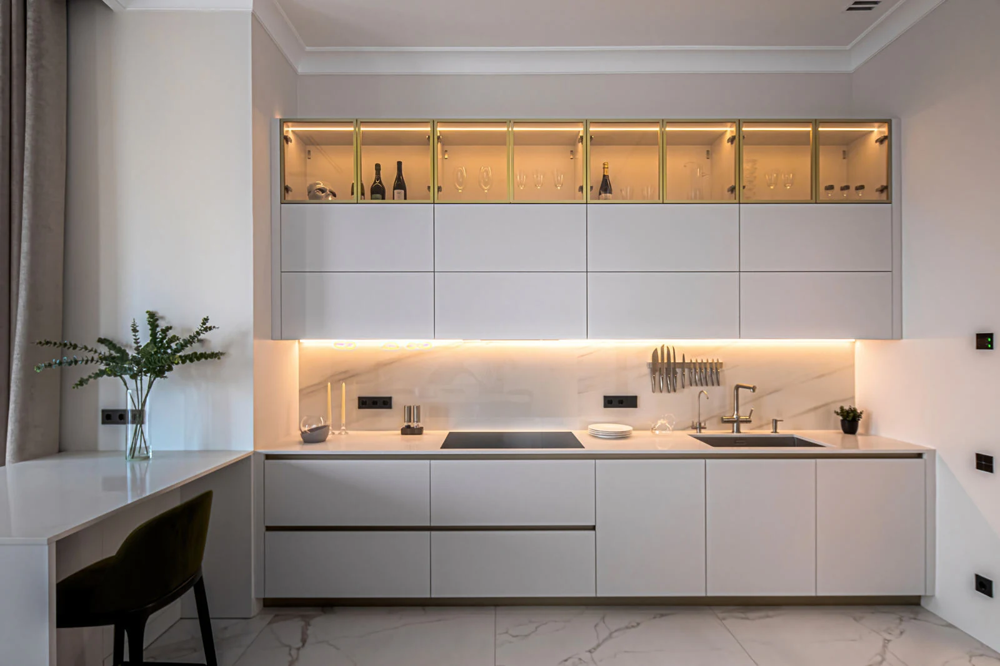

Для вашей семьи
Где собираться вместе, как отдыхать, работать и хранить вещи — учитываем реальные сценарии жизни.

Проектируем квартиры и загородные дома. Продумываем планировку, свет и материалы. Сопровождаем путь от первой идеи до реализации.
Начинаем с ваших привычек, ритма жизни и ожиданий. Из этого складывается интерьер, который остаётся удобным каждый день.
Где собираться вместе, как отдыхать, работать и хранить вещи — учитываем реальные сценарии жизни.
Обсуждаем приоритеты бюджета, подбираем материалы и мебель. Объясняем, на что влияет каждый выбор.
Увязываем планировку, инженерные решения и отделку. Фиксируем детали в проекте и сопровождаем выбранные этапы.
Реализованные интерьеры и дизайн-проекты бюро. Нажмите на проект, чтобы рассмотреть детали.
Состав работ подбираем под ваш объект: от отдельного дизайн-проекта до сопровождения его реализации.
Планировочные решения, концепция интерьера, визуализации и рабочие чертежи для реализации.
Учитываем свет, климат и оборудование в общей концепции. Согласуем интерьер с профильными проектировщиками.
Подбираем отделку, мебель, свет и оборудование. Сравниваем варианты с учётом задачи и бюджета.
Сопровождаем реализацию и проверяем соответствие работ проектным решениям в согласованном объёме.

Сохранили отделку от застройщика и дополнили пространство мебелью, освещением и инженерными решениями под повседневную жизнь владельцев.
На каждом этапе согласуем результат и следующий шаг. Вы понимаете, что происходит с проектом.
Обсуждаем объект, привычки семьи, ваши ожидания и ориентиры бюджета.
Вместе формируем техническое задание. Согласуем состав работ и порядок взаимодействия.
Продумываем зонирование, связи помещений, расстановку мебели и хранение.
Подбираем материалы и предметы. Показываем, как решения складываются в целое.
Оформляем чертежи и спецификации для передачи в реализацию.
В согласованном объёме ведём комплектацию и авторский надзор. Помогаем сохранить задуманный результат.
Архитектор и основатель АС Бюро. Соединяет архитектурный подход с вниманием к тому, как человек живёт в своём доме.
Высшее архитектурное образование. Участник телевизионных проектов на ТНТ, ТВ-3 и «Россия 1».

Да. Достаточно рассказать об объекте и ваших планах. Техническое задание формируем вместе: помогаем определить нужные помещения, сценарии жизни и приоритеты.
Стоимость зависит от площади, исходного состояния объекта, состава проекта и сопровождения. После знакомства подготовим предложение по вашей задаче.
Да. Дизайн-проект, комплектацию и авторский надзор обсуждаем отдельно. В предложении фиксируем именно тот состав работ, который нужен вам.
План квартиры или дома, несколько примеров интерьеров, которые вам близки, и ориентиры по срокам и бюджету. Если чего-то нет, обсудим это на встрече.
Расскажите о квартире или доме, ваших планах и пожеланиях. Обсудим состав проекта, ориентиры бюджета и следующие шаги.
Стоимость и сроки рассчитываем под вашу задачу.